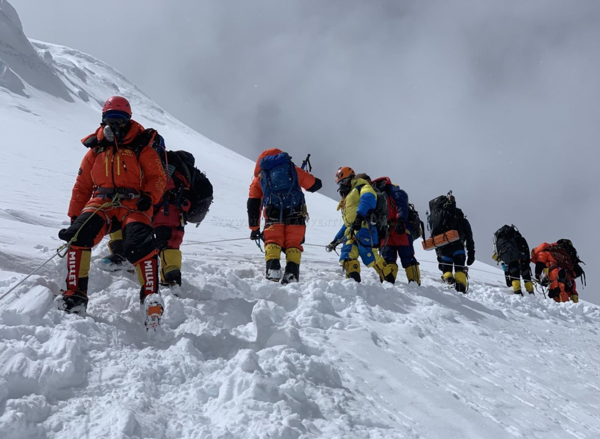
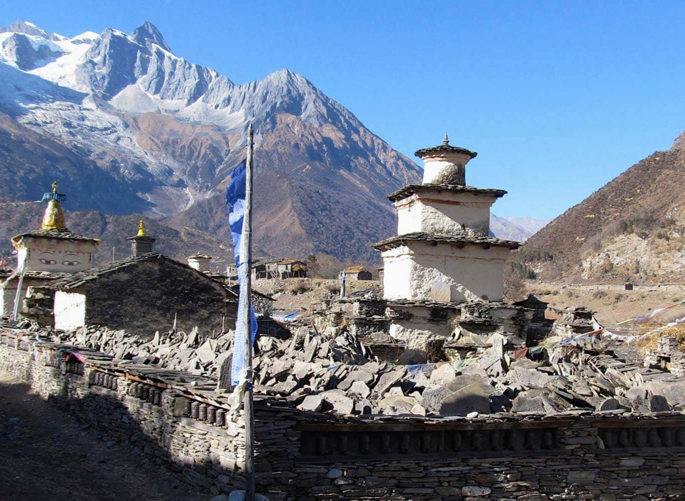

Manaslu Expedition, Complete Guide
Embark on the ultimate Manaslu Expedition with our complete guide, detailed 40-day itinerary, and updated cost for 2026 and 2027. Plan your ascent of the world’s 8th-highest peak with expert insights.





Key Trip Facts
Trek Overview
Trip Highlights
Manaslu Expedition Overview
Embark on the ultimate Manaslu Expedition with our complete guide, detailed 40-day itinerary, and updated cost for 2026 and 2027. Plan your ascent of the world’s 8th-highest peak with expert insights. The Manaslu Expedition is an exceptionally thrilling and adventurous 40-day climb to the eighth-highest peak in the world, Manaslu Peak (8163 meters). This peak climbing or expedition package, designed for serious mountaineers, sits proudly in Nepal’s Gorkha district. With its name derived from the Sanskrit word "Manasa," which translates to "intellect" or "soul," Manaslu is also known as "the mountain of the spirit." Also, let us tell you that this peak climbing journey also acts as a formidable alternative to the Everest Expedition, with equally dramatic scenery and mountaineering prestige.
The Manaslu Expedition with Nepal Unique Treks begins when you arrive in Kathmandu, and the guides prepare you for the climb. After that, we begin the journey towards the Manaslu peak, which starts with a scenic drive to Arughat. This drive goes past the lush lowlands, terraced fields, and high mountain valleys of the Budhi Gandaki River, which marks the beginning of the trekking portion. Throughout the drive, we also pass through a variety of ecological zones, each with its unique flora, fauna, and cultural backdrop.
The trail gradually takes us past traditional Gurung and Tibetan-influenced villages such as Jagat, Namrung, and Sama Gaun. Throughout all of these villages, the climbers can witness ancient Buddhist monasteries, chortens, and prayer flags, making the walk more worthwhile and full of experience. Along with that, the trail of course takes us past different waterfalls, rivers, suspension bridges, and alpine meadows.
The walk starts becoming a little more strenuous once we make our way to the Manaslu Base Camp (4,700 meters). Why? Well, because we need to ascend through a series of higher camps, Camp I, II, III, and IV, within the next 19 days to reach the summit. Well, this requires the climbers to navigate through glacier crossings, technical climbing sections, snowfields, and seracs.
Furthermore, there is so much more that the Manaslu Expedition package has to offer to all the peak climbing enthusiasts. Please read the entire package to know more and book your trip to the Manaslu summit.
Why Nepal Unique Treks & Expeditions?
Expedition to the Manaslu Peak takes us to an altitude of 8163 meters above sea level. Ascending to such a high altitude in a remote area and through challenging alpine landscapes will certainly be very difficult. However, booking the package with a qualified Expedition or Peak Climbing Agency makes the ascent more feasible and safety-guaranteed. for that, Nepal Unique Treks, Manaslu Expedition Package can be the best option for you. Besides, here are some more advantages that you can expect if you book the package with Nepal Unique Treks & Expeditions:
20 Years of Experience: With over two decades of experience in trekking, expedition, and peak climbing, we guarantee a safe and secure expedition to the Manaslu Peak.
Seasoned and skilled guides: Nepal Unique Treks & Expeditions is a team of highly seasoned and skilled guides with over a decade of experience.
English-speaking and friendly team: With us, you can expect assistance from official staff and Sherpa guides with fluent English. Therefore, you can get proper insights about the entire expedition trail and interact with the locals as well.
Personalized Services: Nepal Unique Treks & Expeditions also offers tailored support, which means that we can assist you with permit arrangements to last-minute shopping, and training advice.
All-Inclusive package: Once you book the package with us, you need not worry about anything, as our package cost will be all-inclusive. Whether it be accommodation, meals, or transportation, the package cost covers them all.
Sustainability and Responsibility: Nepal Unique Treks & Expeditions promotes sustainable and responsible trekking or expedition journeys. Therefore, with the package, you can participate in a journey that benefits nature and the entire lifestyle.
Permits Required for the Manaslu Expedition
If you plan to go for the Manaslu Expedition, you need to obtain different permits, which act as passes for you to enter different restricted and conservation zones. Here are the permits that you need to obtain for the Manaslu Expedition trail:
Manaslu Climbing Permit
Manaslu Conservation Area Permit (MCAP)
Annapurna Conservation Area Permit (ACAP)
Restricted Area Permit (RAP)
Trekkers' Information Management System (TIMS)
Nepal Unique Treks & Expeditions assists the climbers to obtain all of these permits after you confirm the booking.
Best Season for the Manaslu Expedition
Selecting the best time or season for the Manaslu Expedition can help you go for a safe and scenic adventure. Well, let us tell you that the mountain’s high-altitude terrain and remote trails demand favourable weather conditions. Therefore, choosing the right season is a key factor in planning a climb to the Manaslu summit. From crystal-clear Himalayan views to stable climbing windows, the ideal season can turn a great expedition into an unforgettable one. However, on the other hand, choosing the wrong season for this ascent can cause several difficulties and issues.
Here, we have broken down the conditions of the Manaslu Expedition in each of the seasons:
Spring (March to May) and Autumn (September to November) Seasons
The spring and Autumn seasons are considered to be the best seasons for any Himalayan adventure in Nepal, including the Manaslu Expedition package. During these seasons, the trekkers can expect clear skies, stable weather, and moderate temperatures. Furthermore, these seasons also call for rhododendron blossoms and greenery all around.
Besides, you can also expect excellent visibility during these seasons; the visibility also stays excellent, which means you can get some spectacular views of the mountains, valleys, and the surroundings. Not just in the trekking period, choosing the right season can also assist you while ascending higher than the base camp or to the summit of Manaslu. Even during the night, you can ascend under comparatively feasible weather conditions.
Seasons to Avoid for Manaslu Expedition
We recommend that climbers avoid booking the Manaslu Expedition package during the monsoon (June to August) and core winter (December to February) seasons. Well, during the monsoon season, the trail can get very difficult and slippery due to heavy rain, landslides, and slippery trails. Besides, during the winter season, the climbing region will be extremely cold, causing several issues and difficulties for the climbers.
Manaslu Expedition Difficulty Level
The Manaslu Expedition journey is classified as a challenging peak climbing or expedition journey in Nepal. This adventurous peak climbing journey in Nepal demands strong physical fitness, prior mountaineering experience, and technical skills for ice, snow, and rope work. Furthermore, the condition can also be very challenging, especially after you cross the Manaslu Base Camp, as we need to navigate through some of the densely icy trails with no proper place to rest at all.
Remember that we need to walk above an altitude of 4,700 meters for about 19 days, that too, for 4 to 8 hours every day. For that reason, the climbers can face difficulties in some or many parts of the Manaslu Expedition trail. However, if you plan and prepare properly and listen and follow all the instructions provided by the Sherpa guides, the Nepal Unique Treks & Expeditions team can lead you through the Manaslu expedition trail with much ease and proper planning.
Transportation Facilities During the Manaslu Expedition
During the Manaslu Expedition package with Nepal Unique Treks, most of the transportation is done via private vehicle or tourist minibus. As you arrive from your country in Nepal, our local representatives will drive you to the hotel in a private vehicle. After that, we drive you from Kathmandu to Arughat in a private vehicle or a minivan. The rest of the journey will be done on foot. After descending from the Manaslu summit, the Nepal Unique Treks team again drives you back from Arughat to Kathmandu in a shared jeep or mini tourist bus. Finally, as the package ends, we drive you to the Tribhuwan International Airport in a private vehicle.
Regardless of which transportation medium we arrange for the journey, the Nepal Unique Treks team is more than dedicated to providing a safe adventure to the climbers. Therefore, we make sure that all the vehicles are properly safety checked and pose no danger or discomfort of any kind. Moreover, the drivers that we choose to drive the vehicles also possess proper knowledge and skill of driving in such terrain, along with a valid license to prove their proficiency and expertise.
Food and Accommodation During the Manaslu Expedition
Along with proper transportation and planning, proper nourishment and restful accommodation are also very important for a successful ascent to such a high-altitude peak, like the Manaslu Peak itself. Over 40 days, your body will be tested in extreme environments, and the quality of your meals and sleeping arrangements can greatly influence your energy, morale, and overall experience. Besides, we also walk to the rugged trails and icy heights of Base Camp from Kathmandu's comfort. Therefore, the Nepal Unique Treks team makes sure to arrange proper food and accommodation throughout the Manaslu Expedition journey.
Food
Kathmandu: Breakfast at the hotel; farewell dinner with cultural program.
Trek: Nutritious meals (dal bhat, pasta, soups, vegetables, bread) prepared by tea houses or our camp cooks.
Climbing Period: High-energy meals (freeze-dried foods, snacks, hot drinks) to sustain you at altitude.
Accommodation
Kathmandu: Comfortable stay at a 3-star level hotel with breakfast.
Trekking Route: Tea houses offering basic rooms with beds, blankets, and shared bathrooms. Camping when tea houses are unavailable.
Base Camp: Tents with sleeping mats, dining tent, and toilet facilities, managed by our team.
Higher Camps: We will arrange different camps (Camp I, II, and III) before making our way to the summit.
Manaslu Expedition, Complete Guide Itinerary: Day by Day
22 Days program for Manaslu Expedition, Complete Guide. Daily timings and sequences remain flexible according to weather, flight operations, and group pace.
Day 1: Arrival in Kathmandu Airport and transfer to Hotel Yak and Yeti or similar (1,350m/4,430ft). Welcome and rest.
Approx. 1,345 m / 4,413 ft
Nepal is a beautiful country where plains, hills, and mountains sit perfectly aligned, starting from south to north. As soon as you land in the Tribhuwan International Airport (Kathmandu), you can sense a different vibe and a unique buzz of tradition and culture. From there, our representatives drive you to the hotel, where you are welcomed with a refreshing drink. After that, you can check in at your hotel before making your way around the nearby areas. Check out the nearby areas, try out some locally prepared food, cuisines, and relax in the spas or clubs. In the evening, the Nepal Unique Treks & Expeditions team invites you for dinner, where we serve an authentic Nopali Khana set. After that, you can return to your room and rest for the night.
Day 2: Preparation, briefings, last-minute shopping, and permit formalities in Kathmandu.
Approx. 1,345 m / 4,413 ft
Nepal Unique Treks & Expeditions dedicates the second day to preparing climbers for the Manaslu Expedition journey. For that, the climbers need to attend an official expedition briefing with their guide, where they will you through the climbing strategy, safety protocols, and route conditions. After that, the Sherpa guide also checks your gear, and if anything is missing, you need to pick up or rent the gear and equipment needed for the peak climbing journey. While you will understand the expedition, our team handles all permit formalities and documentation on your behalf. Besides, we also take you on a quick exploration of Kathmandu if time allows, where you can visit Kathmandu’s rich cultural sites. This includes visiting the Swayambhunath and Bouddhanath Stupa along with the Pasupatinath temple. In the evening, you return to the hotel for an overnight stay.
Day 3: Drive from Kathmandu to Arughat (950m/3,117ft), 7 hrs. Tea house.
Approx. 950 m / 3,117 ft
Our journey towards the Manaslu region begins on the third day with a drive from Kathmandu to Arughat. This drive, lasting for about 7 hours, goes through hillsides blanketed in rice terraces, crossing suspension bridges and forested river valleys. Besides, we also pass through small towns and rural landscapes, offering a preview of the cultural and geographical diversity of Nepal. As you reach Arughat, the starting point of the Manaslu Peak Climbing map, you’ll settle into a local tea house or set up camp for the night. This riverside town along the Budhi Gandaki offers a lively and charming vibe to the climbers with friendly locals and bustling markets. The climbers can take their time to experience the warm air, flowing river, and distant mountain views before they officially begin the trek on the next day.
Day 4: Trek from Arughat to Sotikhola (1,165m/3,822ft), 5 hrs. Tea house/camping.
Approx. 1,165 m / 3,822 ft
Well, today is the day when we officially begin walking on the Manaslu expedition trail. Today's journey follows the Budhi Gandaki River upstream, where we need to walk along forested trails and rustic wooden bridges. Gradually, the terrain starts getting smoother and offers a comfortable warm-up as you adjust to trekking with your pack. Continuing the journey, we will also make our way through scattered villages, rice paddies, and waterfalls falling from the surrounding hills. It takes only 5 hours for us to reach Soti Khola, a beautiful village situated at an altitude of 1,165 meters above sea level. Besides, the sound of rushing water, chirping birds, and distant chatter sets a peaceful tone for your first night on the trail. The Nepal Unique Treks & Expeditions team arranges dinner and overnight stay in a comfortable and hygienic tea house. So after a tiring journey throughout the day, you can get the relaxation that your body deserves.
Day 5: Trek from Sotikhola to Machhakhola (1,330m/4,364ft), 6 hrs. Tea house.
Approx. 1,330 m / 4,364 ft
Leaving Sotikhola on the fifth day, the guides lead you on a trail that goes towards Machhakhola, a village located at an altitude of 1,330 meters above sea level. Today's trail goes onto the cliff above the Budhi Gandaki river and offers outstanding views of the river. Besides, we will also cross several suspension bridges and walk through forests filled with langurs and exotic birdlife. Just wait until you pass through some traditionally settled villages, like Lapubesi. Today, the trail can become narrow and exposed at times, but the experience is more amazing than the ones you have witnessed up until now. As you reach Machhakhola, you can expect warm hospitality from the residents and soothing hot springs nearby. We recommend that the climbers spend the evening stretching out, sipping hot tea, and exchanging stories with fellow climbers. In the evening, the guides will arrange dinner and an overnight stay in a hotel or tea house in Machhakhola.
Day 6: Trek from Machhakhola to Jagat (1,350m/4,430ft), 4 hrs. Tea house.
Approx. 1,350 m / 4,429 ft
Another day calls for another exciting journey in the Manaslu Expedition trail, as we start the walk immediately after breakfast. Today, our mission is to ascend to Jagat from Machhakhola, which takes about 4 hours. Our walk quickly goes along the narrowing Budhi Gandaki gorge, leading us through tropical forests, rocky ravines, and tiny settlements like Khorlabesi. Today, we also have to cross a suspension bridge, after which awaits a place named Tatopani. Here, climbers can take their time to relax and wash off their tiredness in the natural hot springs. After that, we continue over a series of ups and downs, including several small stone stairways etched into the hillsides. After passing through several waterfalls, cliffs, and different smaller settlements, we finally reach Jagat, the traditional entry point into the Manaslu Conservation Area. Jagat’s slate-paved streets, mani walls, and stone houses signal a shift toward Tibetan-influenced culture. Well, as it only takes us 4 hours to reach this settlement, you will have enough time to stroll around, interact with the locals, and delve deep into the natural and cultural beauty of Jagat. Overnight stay and dinner will be arranged by Nepal Unique Treks & Expeditions.
Day 7: Trek from Jagat to Dang (2,300m/7,546ft), 6-7 hrs. Tea house.
Approx. 2,300 m / 7,546 ft
As you have breakfast in the tea house and get ready for another blissful walk, we begin today's journey towards Dang. This section of the Manaslu Expedition trail climbs past lush sub-tropical forests, millet fields, and ridges that open to expansive views of cascading waterfalls and terraced hillsides. Furthermore, you will also cross the Budhi Gandaki multiple times via sturdy suspension bridges. Such an amazing and adventurous journey it will be for any and every adrenaline-rush enthusiast. Not just that, passing through different villages, like Salleri and Philim, also offers you opportunities to experience the traditional Gurung and Ghale culture. We reach Dang after about 6 to 7 hours of walking through pine forests and grassy slopes and ascending on steep climbs at times. Dang, a serene and lesser-visited village at 2,300 meters, offers spectacular mountain vistas and crisp, clean air. Well, this is where you start getting that Himalayan vibes. Besides, you can also witness a strong influence of Tibetan Buddhism in the lifestyle at Dang, with a lot of mani walls, chortens, and prayer flags. On the other hand, the increasing altitude adds to the sense of anticipation and isolation, along with increasing chances of altitude sickness. So, take care of yourself, but do not stop to enjoy the wilderness of the Himalayas. After a long trekking day, you will have dinner and rest for the night in Dang.
Day 8: Trek from Dang to Namrung (2,550m/8,366ft), 6 hrs. Tea house.
Approx. 2,550 m / 8,366 ft
Well, just as we have been doing, we begin the walk immediately after breakfast. As we leave Dang, the trail leads through dense rhododendron and oak forests, with glimpses of Himalayan peaks teasing through the tree canopy. In a while, we will be ascending gradually through the narrowing gorge, passing bamboo groves and occasional herders' shelters. Here, the climbers also need to get their permits checked before entering the Manaslu Conservation Area. After that, a walk into the more remote areas of the Manaslu Expedition trail, where the landscape begins to feel wilder and cliffs and glacial streams come as close as possible. Today's end destination, Namrung, is perched above the Budhi Gandaki River. Besides, this village presents the climbers with panoramic views of the Himal Chuli and Ganesh Himal. Furthermore, this culturally rich village features intricately carved prayer wheels and Buddhist monasteries that reflect Tibetan heritage. Besides, you can also experience the air growing noticeably thinner in this village, which signals your entry into the high-altitude terrain. Take your time to explore the village before having dinner and an overnight stay in a tea house arranged by Nepal Unique Treks & Expeditions.
Day 9: Trek from Namrung to Lho (3,150m/10,334ft), 5 hrs. Tea house/camping.
Approx. 3,150 m / 10,335 ft
Leaving the Namrung settlement, we make our way towards Lho on the ninth day. This section of the trail ascends through alpine forests and traditional Tibetan-influenced villages. Slowly and gradually, you can sense the scenery becoming increasingly dramatic as you pass through Sho and Shyala. These villages show you the expansive views of Manaslu, Manaslu North, and Naike Peak. Furthermore, the colorful prayer flags and mani walls also keep you surrounded by the sacred Buddhist religion. The Lho Village, located at an altitude of 3,150 meters above sea level, welcomes you with panoramic views of Mount Manaslu rising majestically behind the village. Furthermore, Lho is also home to the Ribung Monastery, one of the most significant points of the entire Manaslu region. You will see the monastery sitting on a ridge and offering a serene place for quiet reflection. Besides, the village’s stone houses, prayer wheels, and traditional lifestyle offer deep cultural insight as well. Take your time to interact with the locals and stroll around the village before returning to the tea house for dinner and an overnight stay.
Day 10: Trek from Lho to Sama Gaun (3,780m/12,401ft), 4 hrs. Tea house/camping.
Approx. 3,780 m / 12,402 ft
The trek from Lho to Sama Gaun is short but rich in scenery and culture. After breakfast, we will only walk for about 4 hours to reach Sama Gaun from Lho. Besides, the climbers will also walk through pine forests and wide glacial valleys, with the Manaslu massif constantly in view. As you approach Shyala, you'll catch breathtaking views of Himalchuli, Ngadi Chuli, and the rugged landscape surrounding you. Besides, you will also constantly feel the Himalayas approaching closer and closer with every step. It takes about 4 hours for us to reach Sama Gaun, which means that the climbers will have an abundance of time to rest or explore the village. Why explore? Well, because Sama Gaun is a large and culturally significant village that also serves as a key acclimatization stop before approaching base camp. If you explore the village, you can witness multiple yak pastures and traditional stone houses. Take your time to relax in a peaceful Tibetan environment and interact with the locals to learn more about this village. Overnight stay and dinner will be arranged by our team in a comfortable tea house in Sama Gaun.
Day 11: Rest and acclimatization day at Sama Gaun (3,780m/12,401ft). Tea house/camping.
Approx. 3,780 m / 12,402 ft
After 10 days of journey in the Manaslu Expedition route, Nepal Unique Treks & Expeditions dedicates the eleventh day for acclimatization. On this day, we sit back to adjust to the altitude and prepare our bodies for the high mountain environment. Besides resting, the guides will also lead you on a hike to Pungyen Gompa or take you to visit the serene glacial lake of Birendra Tal. Both of these hikes help the acclimatization and offer majestic views of Manaslu’s glaciated flanks. Furthermore, the climbers can also spot blue sheep grazing or hear the distant rumble of icefalls on both of these hikes. After a beautiful and adventurous hike to one of these viewpoints, we return to Sama Gaun. Here, the climbers can visit a local monastery, spin prayer wheels, or sip butter tea while soaking in the calm of this sacred place. Well, let us tell you that the eleventh day is just about physical adjustment, but also spiritual grounding before the demanding climb ahead. Also, we recommend the climbers to rest deeply for the night, as we have adventurous walks awaiting us in higher altitudes.
Day 12: Trek from Sama Village to Manaslu Base Camp (4,700m/15,420ft), 4 hrs. Camping.
Approx. 4,700 m / 15,420 ft
After a delicious breakfast in Sama Gaon (Village), we leave Sama Village and walk towards the Manaslu Base Camp. This section of the trail climbs steadily through moraine fields, juniper scrub, and glacial outwash as you gain altitude. Furthermore, you can also experience the terrain growing more rugged and exposed, with fewer signs of civilization as the mountains close in around you. After ascending a few meters, the climbers can sense the shift from trekking to true mountaineering as the icy peaks loom larger. As you reach the Manaslu Base Camp, you can see a flat snowy land sitting beneath the awe-inspiring north face of Mount Manaslu, offering a raw, majestic gateway to the world’s eighth-highest peak. Sitting between the glacial moraines and encircled by towering snow-capped giants, reaching this base camp marks a significant milestone for climbers, both physically and mentally. Besides, you can also witness the landscape shifting from alpine greenery to an arid, high-altitude environment. Furthermore, the Manaslu Base Camp itself sits as a well-established seasonal settlement of expedition tents and logistical setups. Also, the guides set up tents that typically include sleeping tents, kitchen facilities, communal dining areas, and spaces for briefings and technical preparations. After exploring the base camp area for some time, you will return to your camps for dinner and an overnight stay.
Day 13: - DAY 31Climbing period for Manaslu summit (8,163m/26,781ft). Camping.
Approx. 5,600 m / 18,373 ft
The climbing phase to the Manaslu Summit begins on the 13th day as we leave the base camp and follow the northeast face. This is an elegant but technically demanding route known for its seracs, crevasses, and weather-dependent windows. Make sure to follow the instructions provided by the seasoned Sherpa guides as they guide you through a well-established camp system designed to aid gradual acclimatization. In that way, we need to cross three different camps, except for the base camp, before reaching the summit. Well, here is the breakdown for the complete Manaslu summit expedition from the base camp. Base Camp to Camp I (5,600m/18,373ft) The climb begins early in the dawn before sunrise. So, get ready with your head torches and all the mountaineering gear. You will need to use crampons and fixed ropes, especially as you navigate a series of ice slopes and crevasse zones. As you ascend to Camp I, you will see a protected shelf above the glacier, offering panoramic views of the surrounding peaks and ridges. Often, this is where we sleep for the night to get our bodies adjusted for the higher ascents. During acclimatisation rotations, climbers typically move between Base Camp and Camp I multiple times, carrying gear, resting, and practicing rope work. While ascending to such high altitudes, we must follow the "climb high, sleep low" strategy. This can help you build strength and prevent altitude sickness. Besides, you shall also be aware that the days here are focused on gear preparation and learning to manage extreme cold and sudden weather changes. Camp I to Camp II (6,200m / 20,341ft) From Camp I, the route steepens as you ascend a broad glacier flanked by towering seracs. Besides, the path includes traversing fixed ropes and ladders placed over crevasses. Furthermore, you shall also be careful about the climbing conditions as they can vary daily based on icefall activity. Talking about Camp II, this camp sits on a windswept plateau near a large icefall. Not to mention, the location of the camp is challenging as the temperature can drop significantly. However, the dramatic views of the upper slopes and snowy peaks keep you encouraged and active. As you reach here, the Sherpa guides set up the camps for the climbers to spend another night. Also, remember that you might have to spend more than one night to recover and monitor weather patterns. However, the Sherpa guides from Nepal Unique Treks & Expeditions take proper care of your hydration and nutrition, whereas you will be responsible for maintaining discipline to help you gain strength to ascend higher. Camp II to Camp III (6,800m / 22,310ft) Camp III lies just below the col that leads to the summit ridge. Besides, the climbers also need to cover one of the steeper sections of the entire Manaslu peak climbing journey. Therefore, we recommend that climbers prepare properly before beginning the trail. Another reason why you need to prepare well and have a very strong gut is that this section of the climb is prone to occasional avalanches and strong winds. Also, you might need to start using oxygen at this stage, depending on the climber's preference and condition. Here, you will rest briefly to conserve energy and get ready with the gear packed and summit attire readied for the final push. The night before the summit attempt is intense, quiet, focused, and filled with anticipation. Also, we recommend all the climbers to go to bed early, as we need to wake up and begin the walk before midnight. Summit the Manaslu Peak (8,163m / 26,781ft) Well, as mentioned above, the summit push typically begins around midnight or 1:00 AM. We slowly and gradually walk along the steep snow and ice ridges under the cover of darkness. Well, throughout this section of the Manaslu summit will be guided by fixed ropes and the light of your headlamps. Furthermore, the route from Camp III to the summit also includes the famed “false summit.” It refers to a point which is lower than the true highest point, which is also mistakenly considered as the main Manaslu summit. After getting your patience and stamina tested, we make our way to the final ridge. As this is the final, technical, and difficult section of the Manaslu expedition, we recommend that the climbers keep their legs strong and stamina in top-notch condition. Within some more time of climbing, we will finally reach the summit of Manaslu, one of the world’s fourteen 8,000-metre peaks. This will certainly be one of the most emotional and exhilarating achievements. Besides, the Manaslu peak also offers panoramic 360-degree views of the Himalayas, including the Annapurna, Dhaulagiri, and Ganesh Himal ranges. After celebrating the summit ascent for a brief moment and capturing as many photos and videos as possible, we begin the descent, retracing steps to Camp III or even Camp II if energy allows. Slowly and gradually, we make our way to the base camp, where we spend another night in tents after dinner. Cleaning the Base Camp and Ready for Descent Being a responsible, sustainable, and environment-friendly trekking agency, the Nepal Unique Treks & Expeditions team packs all the waste. Besides, we also take some time to explore the entire space where we set up the camp before descending to the Manaslu Base Camp. Returning to Base Camp is a profound moment, exhausted but victorious, climbers often reflect deeply on the scale of their achievement. We will spend another night at the Base Camp before descending further.
Day 14: Preparation to return, clean Base Camp (4,700m/15,420ft).
Approx. 4,700 m / 15,420 ft
After such an exhilarating, adventurous, and tiring summit of the Manaslu Peak, we devote the 32nd day to rest, reflection, and responsible expedition wrap-up. Other than that, we also spend some time sorting gear, packing equipment, and dismantling tents. After that, both climbers and Sherpa guides clean the base camp thoroughly, just like we did in the higher camps. Furthermore, we also collect the oxygen cylinders, climbing ropes, food waste, and all trash to transport back to Kathmandu. Once we finish cleaning the base camp, take your time to rest in the camp itself, as we will leave the base camp the next day.
Day 15: Trek from Base Camp to Sama Gaun (3,780m/12,401ft), 3 hrs. Tea house.
Approx. 3,780 m / 12,402 ft
Finally, it's the day to descend from the Base Camp and return from the Manaslu expedition journey. On that verge, today's short descending journey takes us to Sama Gaun. Well, the walk will be short as we only have to move our legs for 3 hours today. As you approach Sama Gaon, you can witness the return of greenery and an increase in oxygen in the air. At Sama Gaon, you will have enough time to stroll around and interact with the locals before going to the tea house for dinner and an overnight stay.
Day 16: Trek from Sama Gaun to Namrung (2,550m/8,366ft), 6 hrs. Tea house/camping.
Approx. 2,550 m / 8,366 ft
After so many days in an alpine icy area, we will again get a chance to walk on the trail that goes through ush rhododendron forests and cascading waterfalls. Today, we will walk a little longer as this section of the Manaslu Expedition trail demands that climbers walk for 6 hours. However, as you have already covered such high-altitude terrain, today's journey feels lighter, both physically and mentally. Besides, you will also be accompanied by distant birdsongs and the flowing rhythm of the Budhi Gandaki river. Namrung is a familiar rest stop, where you can enjoy local hospitality, hot meals, and storytelling by the fire. It's a perfect place to rest after such high altitude ascent for such long days. After having dinner in the hotel, we recommend climbers to go for the rest their body needs the most.
Day 17: Trek from Namrung to Philim Village (2,300m/7,546ft), 6 hrs. Tea house/camping.
Approx. 2,300 m / 7,546 ft
We are only two days away from beginning a driving journey back to Kathmandu. Do you know what this means? Well, it means that only two more days to walk in the Manaslu Expedition map before reaching Kathmandu. As you finish breakfast, our guides take you on a trail that descends steadily through pine forests, past terraced fields, and along traditional stone houses. Besides, we also make our way through some chortens, mani walls, and another cultural marker, which keep us bound by the sacred Buddhist religion. Walking through similar trails and interacting with different people in different villages, we make our way to Philim within 6 hours of walking. In the tranquil and peaceful environment of the Philim village, you can expect some warm hospitality from the locals along with spectacular views of the lower valley. Furthermore, the altitude here feels blissfully breathable, and meals are rich with local produce. After having dinner, go for a good rest in the tea house before we descend further.
Day 18: Trek from Philim Village to Machhakhola (1,330m/4,664ft), 6 hrs. Tea house/camping.
Approx. 1,330 m / 4,364 ft
Well, we have finally approached the last day of trekking in the Manaslu Expedition trail, and this trek takes us from Philim to Machhakhola. We begin the walk immediately after breakfast and follow the winding gorge of the Budhi Gandaki Riverretracing steps through bamboo forests and over suspension bridges. Furthermore, you can also sense the climate becoming warmer and the vegetation thicker. With that, you can feel more relaxed as you finally reach Machhakhola. In Machhakhola, our team will arrange dinner and an overnight stay in a hotel. However, before that, we recommend that you stroll around the village and interact with the locals to learn more about their lifestyle, traditions, and culture.
Day 19: Trek from Machhakhola to Arughat (950m/3,117ft), 8 hrs.
Approx. 950 m / 3,117 ft
The final trekking day is long but rewarding, descending into the lower hills where rice fields, banana trees, and bustling villages return to the landscape. The terrain is gentler, and your footsteps feel lighter with each passing kilometre. On this trail, we cross several rivers and hillside farms, where you get greeted warmly by locals. Reaching Arughat marks the end of your walking adventure. There’s a deep sense of closure as you arrive, tired yet fulfilled. Tonight, you’ll enjoy a well-deserved rest and a celebratory dinner with your expedition team, one last moment of camaraderie before returning to the city.
Day 20: Drive from Arughat to Kathmandu (1,350m/4,429ft), 7 hrs via tourist mini bus. Hotel stay.
Approx. 1,345 m / 4,413 ft
After walking on such high terrains, steep climbs, and summiting the 8,163-meter peak, it's time for us to return to Kathmandu. As you wake up and have breakfast in the hotel, the guides take you to the bus station. From there, you will board a tourist minibus (or larger bus, depending on the number of people in the group). It takes about 7 hours for the bus to drive to Kathmandu. As you reach Kathmandu, you can settle down at the hotel where we stayed before the journey. Take your time to get freshened up, relax, and spend some time strolling around the city area on your own. You can check out some spas, massage spots, or spend time in pubs or clubs. In the evening, you will return to the hotel to sleep.
Day 21: Free day to relax and shop in Kathmandu. Farewell celebration dinner with cultural program.
Approx. 1,345 m / 4,413 ft
Well, after such a physically straining and mentally demanding ascent to the peak of Manaslu, you will need a day's leisure period before putting an end to the package. Therefore, on the 39th day, it's nothing but relaxation and final shopping for souvenirs. Our guides can also take you to explore certain significant places in Kathmandu, depending on your wishes. Regardless, the Nepal Unique Treks & Expeditions team invites the climbers for a farewell celebration and dinner with a cultural program before putting an end to the Manaslu Expedition package. In this program, we will also provide the climbers with a certificate for the accomplishment of such an enduring and adventurous journey.
Day 22: Transfer to Kathmandu airport for final departure.
Approx. 1,345 m / 4,413 ft
Finally, it's the end of the 40-day Manaslu Expedition package. If you plan to return to your country, our local representatives will drive you to the airport and bid you a final farewell. However, if you plan to go for some other adventure in Nepal, you can book a Trekking, Tour, or Peak Climbing package with Nepal Unique Treks & Expeditions because you already know our services.
What is Included (Regular Package)
What is Excluded
Booking Dates & Availability
Packing List for Manaslu Expedition, Complete Guide
High-altitude Base Camp kitchens, tents, Sherpa support, oxygen/regulatory logistics included per expedition package.8,000m / 7,000m Climbing Systems (4 items)
Base Camp to Higher Camps (3 items)
Medical & Permit Documentation (2 items)
Read before you book: Manaslu Expedition, Complete Guide
Practical logistics derived directly from this package's route facts, inclusions, and elevation profile.
Accommodation & Meals (Hotel, Guesthouse, Camping)
Accommodation follows the package grade (Hotel, Guesthouse, Camping) in Kathmandu and along the Manaslu route. Check your package Includes section for included meals and Kathmandu hotel nights.
Permits & Local Logistics
Transportation is arranged via Private Jeep and Car. Applicable permits listed in the package inclusions are arranged by Nepal Unique Treks prior to departure.
Route Difficulty & Elevation (8,163 m)
Manaslu Expedition, Complete Guide is rated Adventurous with a maximum elevation of 8,163 m. Follow your guide's pacing and stay hydrated throughout the 22 Days itinerary.
Best Time to Visit (Spring, autumn)
Recommended operating season on the source page: Spring, autumn. Additional official notes from the source page follow below.
Traveller Useful Information
Besides food, accommodation, and transportation, there are several other preparations that you need to make for the Manaslu Expedition. As this is a very high-altitude expedition journey that takes us to an altitude of 8163 meters above sea level, proper planning and preparation play significant roles in guaranteeing success and safety to the ascenders. We recommend that the climbers undergo two different types of preparation, and both of them are listed and described below:
Basic Preparation
Well, first off, basic preparation is more than necessary for any and every journey in the mountains. These basic preparations include:
Physical Training: Build endurance with 4-6 months of cardio (running, cycling), strength training, and hiking with a loaded backpack.
Mental Endurance: You also need to prepare yourself mentally for such long walks, remote conditions, and difficult situations that might arise during the expedition.
Acclimatization training: Before you make your way to such high altitude peak climbing journey, we recommend all climbers to go for some acclimatization training as well. For that, you can participate in some other regular hiking and Trekking in Nepal.
Hydration: One of the best ways to prepare yourself and your body for this peak climbing journey is by keeping yourself properly hydrated.
Training and Use of Gear
As this is a peak climbing package, climbers must also train to use all the gear and equipment necessary for ascending to the peak of eighth-highest peak in the world. If you book the package with us, we make sure that the professional Sherpa guides train you well before ascending. Besides, we have even separated a few days once we reach the base camp for the climbers to learn how this gear and equipment can be and should be used during the summit climb.
From wearing the harness, using the rope, and understanding the fitting of the clothes, climbers must be aware of everything while making the push. Besides, you must also be familiar with all the peak climbing gear like mountaineering boots, crampons, ice axes, climbing helmet, harness, and other essential tools like karabiners, slings, and belay devices.
Well, smart and proper packing always plays the most significant role in making your adventure more convenient and less risky. Therefore, whether it be a trekking journey or a peak climbing journey, the climbers must always think very smartly and pack their backpacks. Below, we have listed all the important items that you must carry during the Manaslu Expedition journey:
Mountaineering Equipment
Climbing harness (UIAA certified)
Climbing helmet
Ice axe (technical or classic, depending on style)
Crampons (compatible with your boots)
Mountaineering boots (double or triple insulated)
Carabiners (locking and non-locking: 3 to 5 pieces)
Ascender and descender
Prusik cords and slings
Adjustable trekking poles
Alpine climbing rope
Clothing
Base Layers:
2 to 3 moisture-wicking thermal tops and bottoms
Thermal underwear (quick-drying)
Mid Layers:
1 or 2 fleece or softshell jackets
Insulated down or synthetic jacket (lightweight for trekking)
Outer Layers:
Waterproof shell jacket and pants (windproof, breathable)
Expedition down jacket (800-fill or above, must handle sub-zero temperatures)
Down pants (for high camps and summit push)
Climbing & Camp Wear:
Insulated gloves (2 pairs: one for climbing, one for camp)
Lightweight fleece gloves or liners
Expedition mittens (down or synthetic, waterproof shell)
2–3 trekking pants
Trekking shirts (quick-dry)
2–3 pairs of thermal socks (plus liners)
4–5 pairs of hiking socks
Gaiters (to keep snow and debris out)
Buff, neck gaiter, or balaclava
Sun hat and woollen beanie
Footwear
Mountaineering boots (for summit and high camps)
Sturdy trekking boots (broken-in)
Camp shoes or sandals (for resting and around lodges)
Warm socks for camp and night use
Accessories
UV-protection sunglasses
Glacier goggles
Headlamp with extra batteries
Sleeping bag (-30°C or below, expedition-grade)
Sleeping bag liner (fleece or silk for added warmth)
Insulated mattress and foam pad
Water bottle (1Litre) + thermos (Best to carry a few of them)
Hydration bladder (optional, not ideal in freezing temps)
Pee bottle (for use in a tent)
Personal first-aid kit (including altitude meds, Diamox, etc.)
Sunscreen (SPF 50+) and lip balm with UV protection
Small quick-dry towel
Toiletries + wet wipes + hand sanitiser
Lightweight backpack (20–30L for day use)
Duffel bag (100L+, carried by porters/yaks)
Stuff sacks and dry bags for organization
Other than these, we also recommend that you bring your toiletries, some extra cash (NPR), all the necessary documents (permits, VISA, etc), along with smartphones and a camera to capture as many memories as possible. If you carry all these, we ensure that your Manaslu Expedition journey will be the best and successful.
Did you read the entire package and understand everything about the Manaslu Expedition? Well, now it's time for you to schedule 40 days to go on this peak climbing adventure in Nepal. For that, all you need to do is navigate to the right-hand side of this package and click on the BOOK NOW button. After that, we request the climbers to make a 30% advance payment, which confirms the booking. The rest of the payment can be done once you visit our office before leaving Kathmandu for the Manaslu Peak Climbing Journey.
If you have any questions or queries regarding the package or any of our services, please feel free to contact us via WhatsApp, Viber, or Zalo. Besides, you can also send in your queries from the website itself, our team will be ready to help you out anytime.
Altitude Profile of Manaslu Expedition, Complete Guide
Weather on Manaslu Expedition, Complete Guide
Manaslu Expedition, Complete Guide Route & Area Overview
Book This Trek
Contact our Kathmandu coordinators using the booking panel for private or fixed-group departures.
Trip Feedback
Explore verified traveller stories or leave feedback on Nepal Unique Treks.
Visit Nepal Unique Treks